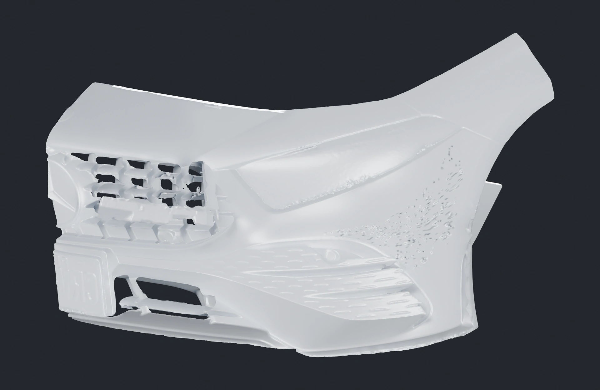
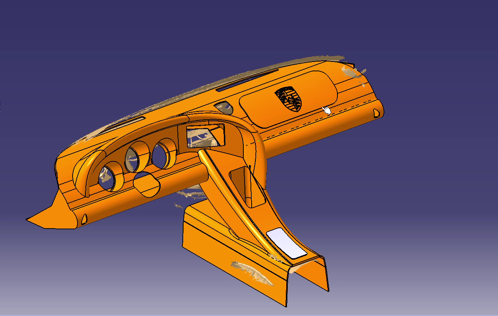

AMG A35 / AERODYNAMICS
Diseñado para este AMG.
Un desarrollo específico de canards, con diseño y cálculo orientados al rendimiento aerodinámico del A35.
Conocer el desarrollo v5 →ATPERFORMANCE / CUSTOM BUILDS
Del primer escaneo a una pieza con carácter propio. Diseño, fibra de carbono y desarrollo a medida para tu vehículo.
ATPERFORMANCE / ENGINEERING STORIES

AMG A35 / AERODYNAMICS
Un desarrollo específico de canards, con diseño y cálculo orientados al rendimiento aerodinámico del A35.
Conocer el desarrollo v5 →
PORSCHE 924 / BESPOKE INTERIOR
Del escaneo del habitáculo al diseño de un tablero y consola propios. Sigue la evolución y compara las geometrías.
Ver la evolución del Porsche →01 / DENTRO DEL TALLER
Sigue el desarrollo. Geometrías reales, decisiones de diseño y trabajo en proceso.
01 / DEL ESCANEO AL PROYECTO
Desarrollo aerodinámico específico para el AMG A35. Diseño y cálculo orientados al rendimiento; geometría v5 en desarrollo.
Cotizar un proyecto similar ↗Ver prueba de aire en el vehículo →02 / DEL ESCANEO AL PROYECTO
Cubreespejos revestidos en fibra de carbono. Proyecto de skinning terminado; explora la geometría de referencia.
Cotizar un proyecto similar ↗03 / DEL ESCANEO AL PROYECTO
Escaneo disponible del volante Volkswagen como base para el desarrollo a medida.
Cotizar un proyecto similar ↗04 / DEL ESCANEO AL PROYECTO
Geometría del volante Porsche. Escaneo disponible y proyecto en desarrollo.
Cotizar un proyecto similar ↗Imagen renderizada de la propuesta. El visor muestra el escaneo de referencia.
05 / DEL ESCANEO AL PROYECTO
Escaneo del tablero, diseño y planos en proceso para un interior con identidad propia.
Ver animación del avance ↗Cotizar un proyecto similar ↗06 / DEL ESCANEO AL PROYECTO
Geometría de referencia para el desarrollo de un case en fibra. Proyecto en proceso.
Cotizar un proyecto similar ↗07 / DEL ESCANEO AL PROYECTO
Escaneo de la consola Nissan Kicks. Referencia para estudiar formas, ajustes y acabados.
Cotizar un proyecto similar ↗08 / DEL ESCANEO AL PROYECTO
Malla de la consola central Nissan Kicks. Escaneo disponible para el desarrollo del proyecto.
Cotizar un proyecto similar ↗AMG A35 / CANARDS V5
Desarrollo aerodinámico específico para el Mercedes-AMG A35: diseño, cálculo y observación del comportamiento del flujo sobre el prototipo instalado.
Diseño y cálculo orientados al A35
Prototipo instalado · prueba visual de flujo
Prueba de aire con humo · 14 s. Observación cualitativa; no es una medición de carga aerodinámica.
PORSCHE 924 / DESIGN IN PROGRESS
Animación del diseño v1: una mirada al avance del proyecto y a la geometría propuesta sobre el escaneo.
Diseño en desarrollo. La animación no representa una pieza terminada.
PORSCHE / INTERIOR DESIGN
Propuesta renderizada de acabado en carbono para el volante. Una dirección de diseño para el interior; no es una fotografía de una pieza fabricada.
Consultar un volante a medida ↗02 / DIGITAL WORKSHOP
Explora una versión ligera de nuestras geometrías. Gira la vista y descubre el punto de partida de cada desarrollo.
3D / SUPERFICIE E ILUMINACIÓN
Gira, acerca y activa la malla sobre una superficie sólida.
Revisamos la pieza y el alcance del escaneo.
Preparamos la geometría para desarrollar el diseño.
Definimos contigo la pieza, el acabado y el presupuesto.
Vista de referencia simplificada. No es un plano dimensional ni un archivo listo para fabricar.
HONDA CIVIC TYPE R / SCAN POV
Así capturamos la zona inferior del parachoques trasero del Civic Type R: una referencia geométrica para estudiar el encaje y desarrollar nuevas piezas.
Registro del proceso de escaneo. Es un trabajo distinto del skinning de los cubreespejos.
Cotizar un escaneo para mi proyecto ↗Video del proceso · 3 min · reproducción manual.
03 / BESPOKE PARTS
Desarrollo a medida bajo cotización, según vehículo, geometría y acabado.
Trabajos desde S/ 400 como referencia de entrada. Los carenados y conjuntos completos requieren presupuesto específico.
ALTA CILINDRADA · BAJO COTIZACIÓN
Carenados laterales, quillas, colines y tapas. Evaluamos cada aplicación a partir de la moto o de la pieza original.
Línea propuesta para desarrollo a medida. No son piezas disponibles en stock.
Consultar para mi moto ↗DISEÑO ESPECÍFICO
Geometría y desarrollo orientados al vehículo y al objetivo del proyecto. Conoce el avance del AMG A35.
Cotizar mi desarrollo ↗BESPOKE INTERIORS
Un interior con identidad propia, desde el escaneo hasta la propuesta de diseño. Render del volante como referencia de acabado.
Cotizar un volante ↗CARBON FINISHES / SKINNING
Revestimiento de una pieza existente con fibra de carbono. Conservamos la pieza base y trabajamos su acabado: una línea distinta de la fabricación de piezas nuevas.
Cubreespejos con skinning en carbono: el ejemplo terminado de esta línea de trabajo.
Cotizar un acabado en carbono ↗04 / NEXT IN THE WORKSHOP
Nuevas aplicaciones en carbono, interiores a medida y desarrollos aerodinámicos. Los próximos proyectos se anunciarán cuando su alcance esté definido.
Proponer un proyecto ↗05 / LET’S BUILD
Cuéntanos qué vehículo tienes y qué quieres desarrollar. Coordinamos la evaluación y la disponibilidad directamente contigo.
contacto@alphatechnologique.com@atp.peru ↗Lima, Perú · +51 922 877 190